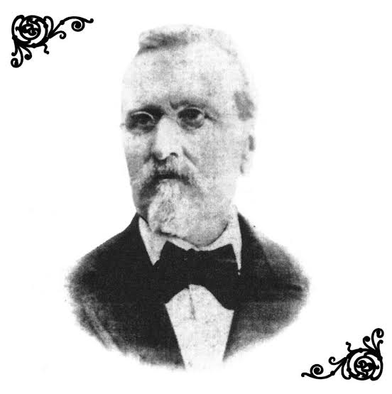

FUNDACION DE LA ESCUELA NACIONAL PARA SORDOMUDOS (1867)
El inicio oficial de la LSM se da en 1867, cuando el presidente Benito Juárez decretó la fundación de la Escuela Nacional para Sordomudos en la Ciudad de México. Esta escuela fue dirigida por Eduardo Alfonso Huet Merlo, un maestro francés que era oyente pero tenía conocimientos sobre la educación de personas sordas.
Los estudiantes mexicanos sordos comenzaron a crear sus propias señas, adaptadas a su contexto, su cultura y su entorno. Al convivir entre ellos, compartieron y estructuraron un sistema cada vez más complejo.
Así nació lo que con el tiempo sería la Lengua de Señas Mexicana (LSM): no fue inventada por una sola persona, sino creada colectivamente por la comunidad sorda.

A mediados del siglo XX, se impuso en muchos países el modelo del oralismo, especialmente después del Congreso de Milán en 1880, donde se recomendó que la educación para sordos se centrara únicamente en la lectura labial y el habla oral.
En México, este enfoque se adoptó con fuerza. Durante varias décadas:
Se prohibió el uso de señas en las escuelas.
Se presionaba a los niños sordos a hablar y leer labios, lo cual era muy difícil para muchos.
Las señas eran vistas como “primitivas” o “inferiores”.
Las personas sordas eran marginadas y no podían acceder plenamente a la educación.
A pesar de esto, la LSM nunca desapareció. Sobrevivió en los patios de las escuelas, en las casas, en las calles y en los espacios donde las personas sordas se reunían.
Reconocimiento legal y oficial de la LSM
En 2005, se publicó una reforma a la Ley General de las Personas con Discapacidad, en la que se reconoció oficialmente a la Lengua de Señas Mexicana como una lengua nacional.
En 2010, con la creación de la Ley General para la Inclusión de las Personas con Discapacidad, se reafirmó este reconocimiento. La ley señala que:
-La LSM es una lengua nacional.
-El Estado debe promover su enseñanza, uso y difusión.
-Las personas sordas tienen derecho a usar LSM en la educación, salud, justicia, medios de comunicación, etc.
Además, en la Constitución Política de la Ciudad de México (2017), la LSM también fue reconocida como lengua oficial en la capital del país.
Actualidad de la LSM
Hoy, la Lengua de Señas Mexicana:
-Es usada por cientos de miles de personas sordas y oyentes en México.
-Tiene gramática, vocabulario, cultura y formas de expresión artística propias.
-Es enseñada en instituciones educativas.
-Está presente en televisión, redes sociales, instituciones públicas y eventos oficiales.
-Hay intérpretes certificados que apoyan en juicios, hospitales, escuelas, noticias, etc.
La comunidad sorda mexicana continúa luchando por más inclusión, educación bilingüe de calidad, y respeto pleno a sus derechos lingüísticos.
La LSM no es una traducción del español. Es una lengua visual y espacial, con su propia forma de construir significados. Su historia es la historia de resistencia, creatividad y dignidad de las personas sordas en México.